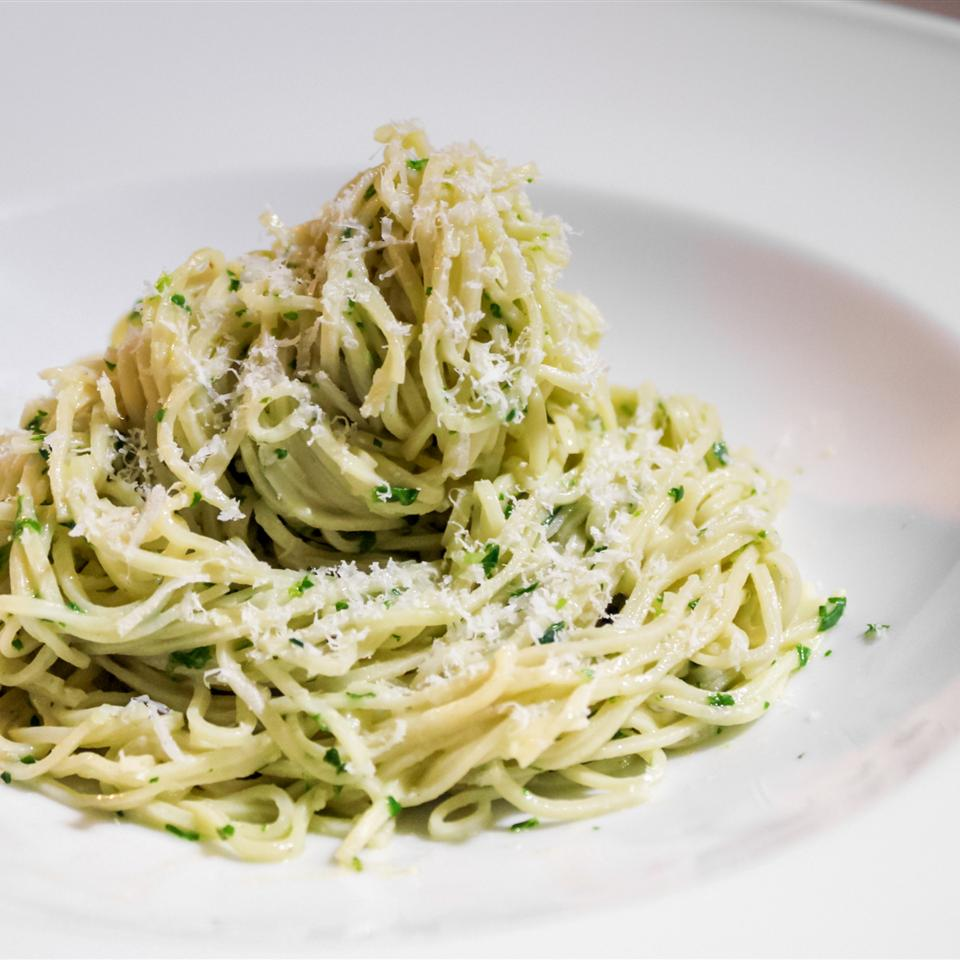
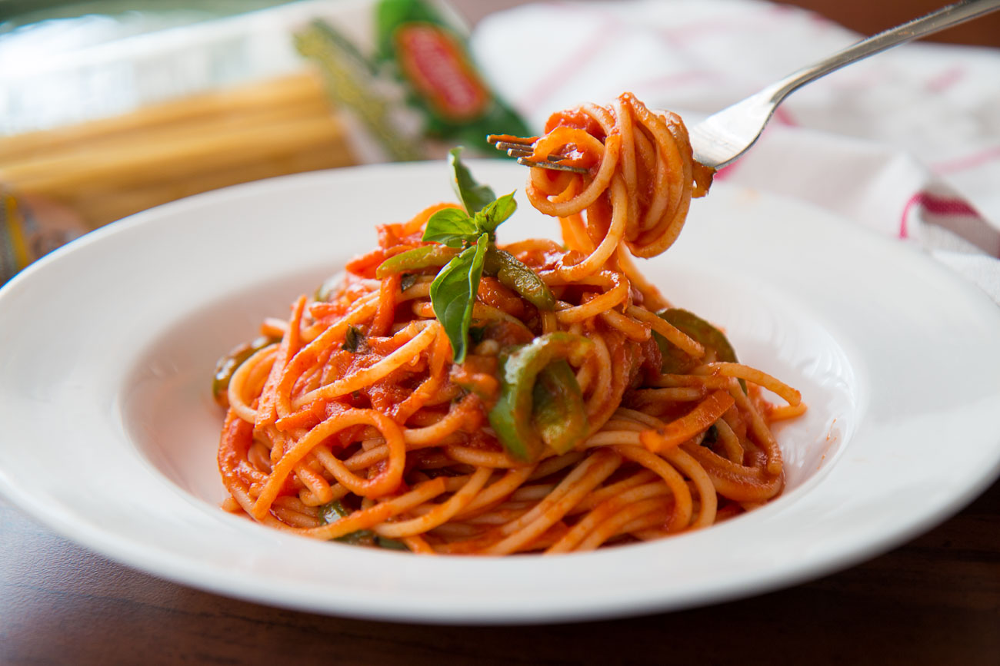
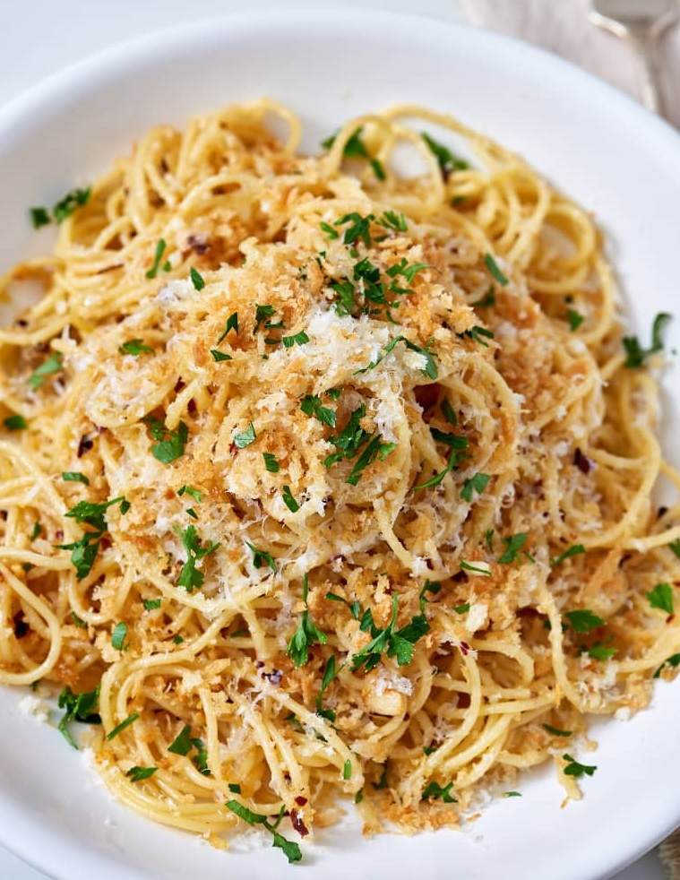

3. Pesto
made with a fresh mix of basil, garlic, olive oil, nuts, and cheese is an easy favorite.

Knowing how to make a straightforward basil pesto will give you domething to do with all that old basil left in your fridge that you bought for some reason, but also have something to dress up pizza, swipe on sandwiches, and even add to chicken salad. giving it the number 2 spot on this list.2. Spaghetti with tomato sauce
Marinara is a simple tomato sauce. this sauce uses tomatos, a lot of garlic, salt and pepper, and a bit of fresh herbs, simmered together until your kitchen smells like tomato,

it is amazing comfort food. While a jar of marinara will do just fine in a pinch, it’s hard to beat homemade sauce. This classic recipe is delicious requires just five ingredients and takes only 20 minutes to make. landing it number 3 on this list.
1. brown butter
Brown butter is the two-ingredient pasta sauce that’s equal parts fast and fancy. it’s rich, creamy, and decadent.

It comes together in minutes and makes just about any bowl of noodles feel a little fancy. Simply melt butter and parmesean in a saucepan and cook it for a few extra minutes until it smells like burnt cheese and has a toasted-brown hue. because of how easy and full it is i had to give it number one on my list.